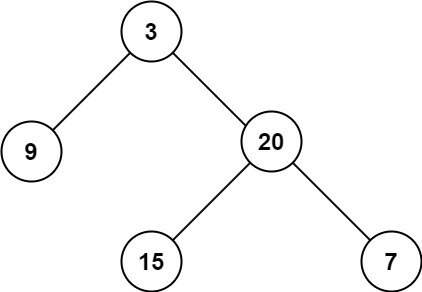

题面
给定一个二叉树 root ，返回其最大深度。
二叉树的 最大深度 是指从根节点到最远叶子节点的最长路径上的节点数。
示例 1：

输入： root = [3,9,20,null,null,15,7]
输出： 3示例 2：
输入： root = [1,null,2]
输出： 2提示：
- 树中节点的数量在
[0, 104]区间内。 -100 <= Node.val <= 100
思路
- 有返回值的递归（反向递归）：必须先知道左右子树的深度，才能算出自己的深度
- 和中序遍历的递归对比：
- 中序遍历：结果存在外部
ans里（副作用），递归不需要返回值，终止时return（即 None）表示"停下来" - 最大深度：没有外部变量，结果完全靠
return一层一层传上去，终止时必须返回有意义的数值 - 把两道题放一起对比：
**中序遍历（无返回值）**：每层不需要子树的"结果"，只管往 ans 里塞
```python
def dfs(node):
if not node: return
dfs(node.left) # 左
ans.append(node.val) # 做事（副作用）
dfs(node.right) # 右
```
**最大深度（有返回值）**：每层必须等子树告诉我它有多深，才能算出自己的深度
```python
def maxDepth(root):
if not root: return 0
left = maxDepth(root.left) # 问左子树：你有多深？
right = maxDepth(root.right) # 问右子树：你有多深？
return max(left, right) + 1 # 取更深的那个 + 1（自己这层）
```
核心区别：
- 中序遍历的问题是"经过每个节点时收集值"——不需要子树返回任何东西
- 最大深度的问题是"这棵树有多深"——**必须先知道左右子树的深度，才能算自己的答案**
- 这就是之前学的**反向递归**（工作在自调用之后）：先递到底拿结果，回来时才算当前层。`+1` 就是"回来时做的事"——加上自己这一层- 终止条件为什么是 `return 0` 不是 `return 1`？ 因为
not root时 root 是 None——根本没有节点，深度是 0。+1在return max(left, right) + 1里，代表的是"当前这个真实存在的节点"。空节点给一个起点 0，有一个节点就 0 + 1 = 1
代码实现
struct TreeNode {
int val;
TreeNode *left;
TreeNode *right;
TreeNode() : val(0), left(nullptr), right(nullptr) {}
TreeNode(int x) : val(x), left(nullptr), right(nullptr) {}
TreeNode(int x, TreeNode *left, TreeNode *right) : val(x), left(left), right(right) {}
};
class Solution:
def maxDepth(self, root: Optional[TreeNode]) -> int:
if not root:
return 0 # 没有节点直接返回0 终止条件
left = self.maxDepth(root.left)
right = self.maxDepth(root.right)
return max(left, right) + 1 # 一个节点就加1- 复杂度：时间 O(n)，空间 O(n)（递归调用栈，最坏情况链状树）
解法二 BFS 层序遍历
思路
queue里始终存的是当前这一层的所有节点for node in queue遍历当前层，把下一层的所有子节点收集到tmpqueue = tmp整层替换，进入下一层- 每处理完一层
res += 1，走完所有层res就是最大深度 - 易错点：
- 必须判断 `if node.left` / `if node.right` 再 append：不判断的话
None会被加进tmp，下一轮遍历到None时None.left直接 AttributeError；而且tmp里全是None也不为空，while queue永远为 True，死循环 - `tmp.append(node.left)` 和 `tmp.append(node.right)` 的顺序不影响结果：这题只关心层数，不关心层内顺序。但第 41 题（层序遍历）要输出每层的值时，就要求先 left 后 right
代码实现
class Solution:
def maxDepth(self, root: Optional[TreeNode]) -> int:
if not root:
return 0
res = 0
queue = []
queue.append(root)
while queue:
tmp = []
for node in queue:
if node.left:
tmp.append(node.left)
if node.right:
tmp.append(node.right)
queue = tmp
res += 1
return res- 复杂度：时间 O(n)，空间 O(n)（队列最多存一层的节点数）